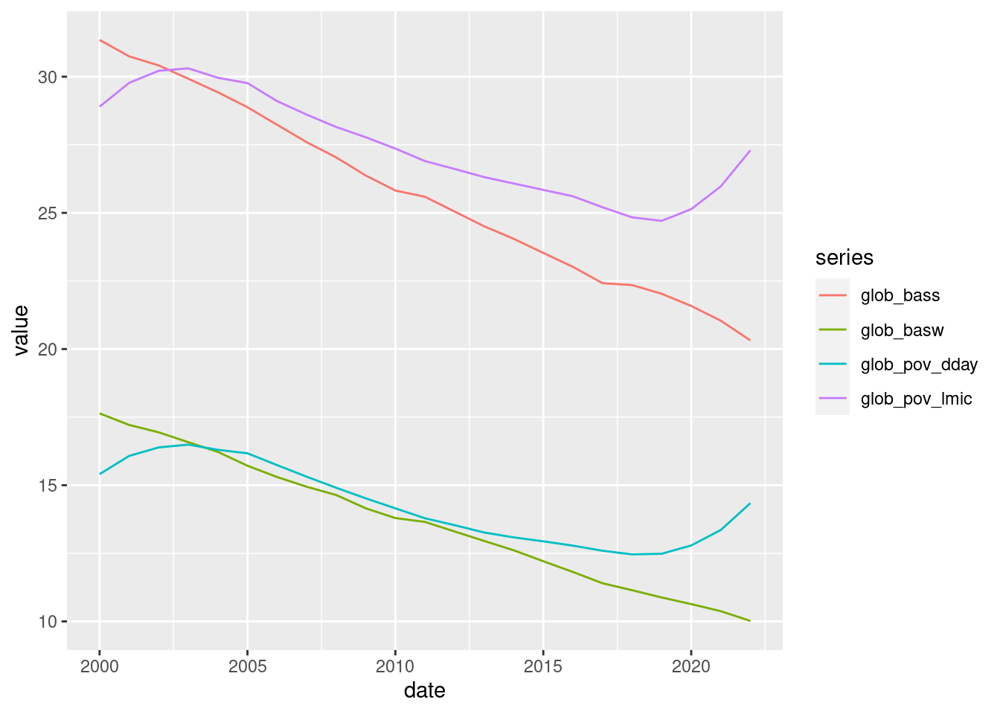
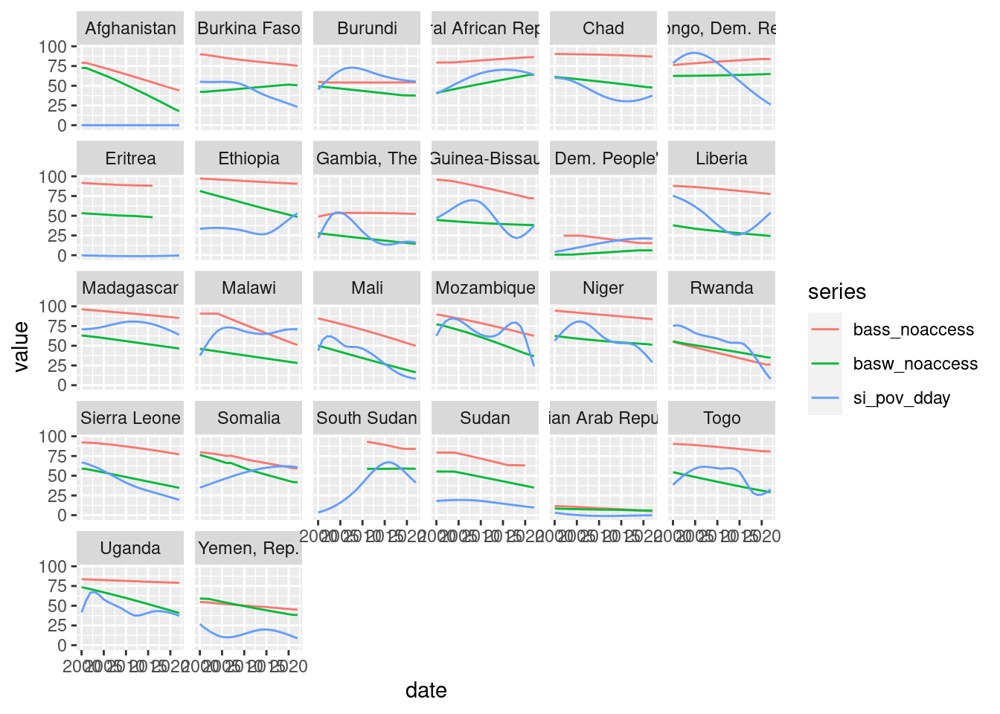
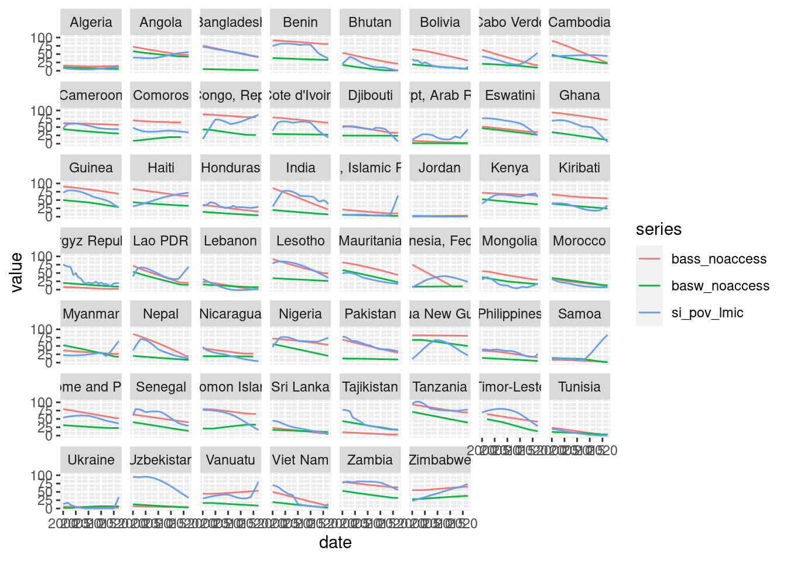

library(tidyverse)
library(gt)
library(wbstats)
library(imputeTS)
library(janitor)
source("WB_data.R")Is the WASH sector beating the economic curve?
Capstone project for b3nharris for ds4owd-001
Introduction
Back in 2018 Stef Smits at IRC published a blog abouts WASH’s mid-life crisis (https://www.ircwash.org/blog/%E2%80%9Ci-am-bored-work%E2%80%9D-washs-mid-life-crisis). This touched on many of the questions that WASH and development professionals always ask themselves: Why are we dealing with the same issues in 2018 that we were discussing in 2005? Why does the pace of change in the WASH sector seemso slow compared to pace of change elsewhere in the world? Do the projects and initiatives we work on make a difference?
One question which struck me at the time was “Is the reduction of the people without access to drinking water and sanitation not just simply a result of the reduction of poverty?”. The blog presents evidence that the rate of reduction in people without access to improved water and sanitation is less than the rate of reduction of people living below the poverty line.
Franceys work on GDP: https://www.franceys.info/blank-2
WaterAid Pub on SE Asia and GDP: https://washmatters.wateraid.org/publications/achieving-total-sanitation-and-hygiene-coverage-within-a-generation-lessons-from-east
WaterAid: brazil
In this blog we try to update and extend this analysis. Firstly, by seeing if in 2024 - over halfway through the Sustainable Development Goals - the same situation still holds true? At a global level is progress on WASH lagging behind economic progress. But there’s another question: even if globally progress on WASH paints a dispiriting story are there countries where this isn’t the case? Are there lower- or lower-middle- income countries where progress on access to WASH is happening faster than overall reductions in poverty. If we can identify countries that are beating the economic curve, maybe there is something we can learn from what they are doing?
Methods
This blog draws on two data sources:
Data on the proportion of the population living below the poverty line (at $2.15 and $3.65 per day (2017 PPP)from the World Bank Poverty and Inequality Platform [ref].
Estimates of the proportion of the population with access to basic water and snaitation services, from the WHO/UNICEF Joint Monitoring Programme [ref].
All data is on a national basis from 2000-2022, was accessed using the World Bank API [ref package]. During data wrangling, the following changes were made:
The World Bank data on population living below the poverty line only includes vlaues for years in which new estimates were made by national governments or the World Bank. To allow for analysis across all years, missing values were imputed using Kalman Filtering [ref TS package].
The JMP estimates on the population with access to basic services were transfromed into estimates of the population without basic services.
Global comparison on progress on poverty (WB data) and WASH (JMP households)
- Water and Sanitation seperately
Country-level analysis to identify positive outliers (countries making faster progress on WASH than poverty)
Analysis on aid flows (OECD) to see if those countries making the best progress are also those receiving most aid per capita (overall and to the WASH sector)
Data Sources
Poverty
Indicator: Poverty headcount ratio at $2.15 a day (2017 PPP) (% of population)
Source: World Bank, Poverty and Inequality Platform. Data are based on primary household survey data obtained from government statistical agencies and World Bank country departments. Data for high-income economies are mostly from the Luxembourg Income Study database. For more information and methodology, please see http://pip.worldbank.org.
Accessed via: WBData API
Access to Water
Indicator: People using at least basic drinking water services (% of population)
Source: WHO/UNICEF Joint Monitoring Programme ( JMP ) for Water Supply, Sanitation and Hygiene ( washdata.org ).
Accessed via: WBData API
Access to Sanitation
TBC
Results
Import and clean data
Global trends on WASH and poverty
Summarise by year to get global averages
global_means <- poverty_water_san |> group_by(date) |>
summarise(glob_pov_dday = mean(si_pov_dday),
glob_pov_lmic = mean(si_pov_lmic),
glob_basw = mean(basw_noaccess,na.rm = TRUE),
glob_bass = mean(bass_noaccess, na.rm = TRUE)) |>
pivot_longer(cols = glob_pov_dday:glob_bass, names_to = "series", values_to = "value")
ggplot(data = global_means)+
geom_line(mapping = aes(x = date,
y = value,
color = series))
Trends in LIC and LMIC countries
LIC
ggplot(data = poverty_water_san |>
filter(income_level_iso3c == "LIC") |>
pivot_longer(cols = c(si_pov_dday, basw_noaccess, bass_noaccess), names_to = "series", values_to = "value"))+
geom_line(mapping = aes(x = date,
y = value,
color = series))+
facet_wrap(~country)
LMIC
ggplot(data = poverty_water_san |>
filter(income_level_iso3c == "LMC") |>
pivot_longer(cols = c(si_pov_lmic, basw_noaccess, bass_noaccess), names_to = "series", values_to = "value"))+
geom_line(mapping = aes(x = date,
y = value,
color = series))+
facet_wrap(~country)